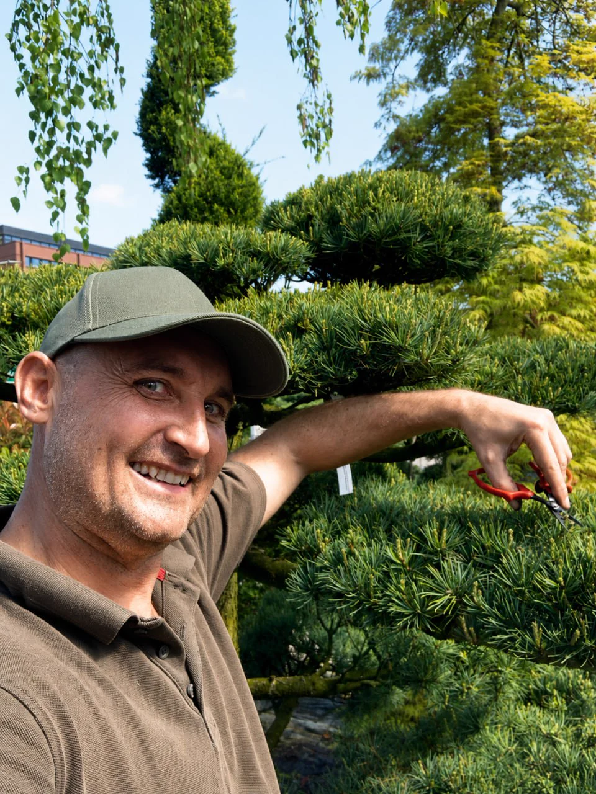
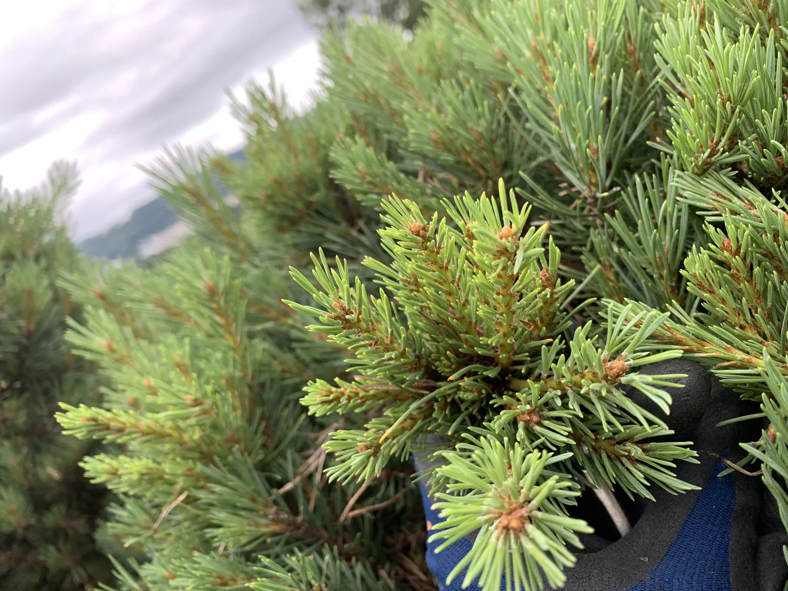
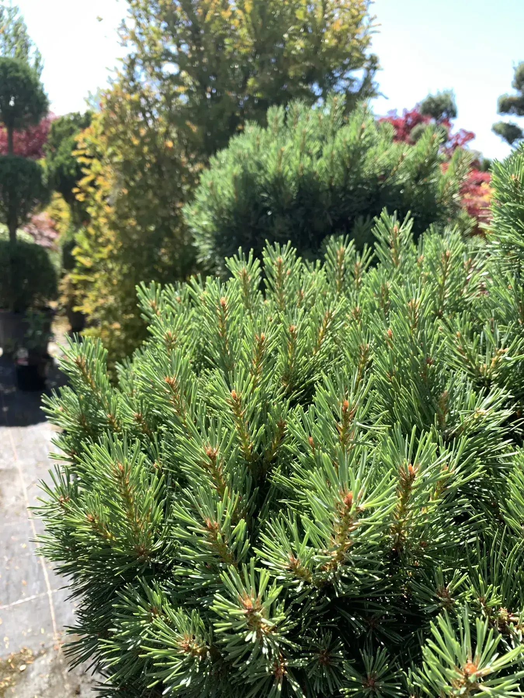
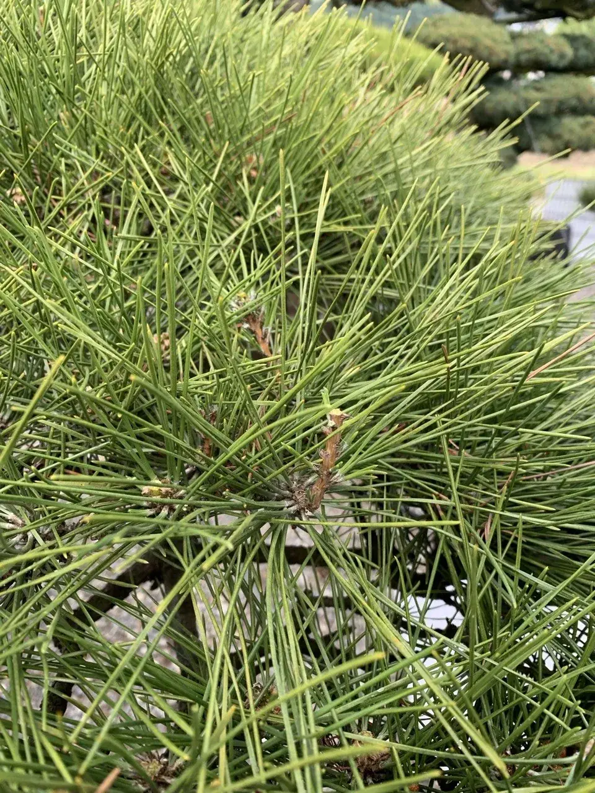
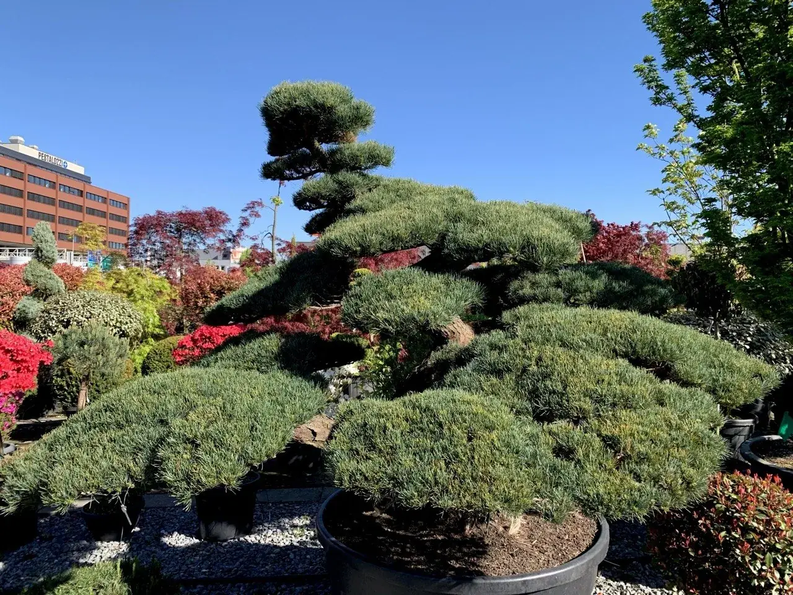

Чому я ріжу японськими ножицями
Чистий зріз, менше травми і більше контролю, ніж у звичайного тримера.
Читати статтюП'ять коротких матеріалів пояснюють мій підхід: художнє формування дерев, інструмент, енергія крони, свічки сосни і кліматичний стрес у Швейцарії.

Чистий зріз, менше травми і більше контролю, ніж у звичайного тримера.
Читати статтю
Світло, повітря і розподіл сили в дереві простими словами.
Читати статтю
Як зі звичайного дерева через читання структури, світло і вибірковий зріз зробити виразну садову форму.
Читати статтю
Чому задерев'янілий приріст Pinus thunbergii не можна просто різати посередині.
Читати статтю
Спека, сухі літа і сильні дощі роблять ранню діагностику важливішою.
Читати статтюНадішліть три фото. Я подивлюся, яке художнє формування дерева, корекція структури крони або послідовність догляду має сенс - без швидкого зрізу і без фальшивих обіцянок.